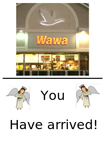
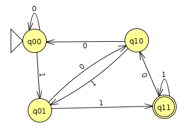

Week 1 Exercise: Acting out DFAs
Chris Tralie
Debrief
Today we physically enacted deterministic finite automata (DFAs), also known as finite state machines (FSMs). We eventually ended up at the Collegeville Wawa (figuratively speaking)
Click here to see a similar exercise that's geared towards a K-12 environment in case you ever end up teaching in that context and you want to do something similar.
DFAs in Python
You may be wondering how to code up DFAs. In fact, it is incredibly succinct to encode a DFA specification using python lists and python dictionaries.
Below is a picture of the last DFA we went over in class today (Click here to download the JFLAP file for it)
As you may recall, this DFA accepts all binary strings that end in 11.
Here's one way to realize this in python. We loop through every character and look in the transitions dictionary to see what comes next based on what our character is. For convenience, I also have an outer loop that goes through many examples at a time.
Running this code in python outputs the following
In a week, we'll talk about how to formally specify a DFA using set notation, but it's really just another way to write what we've already shown both with the picture and in the code above, so you can always keep those modalities in mind as well